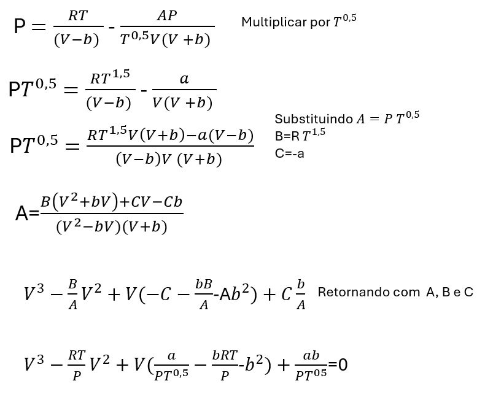
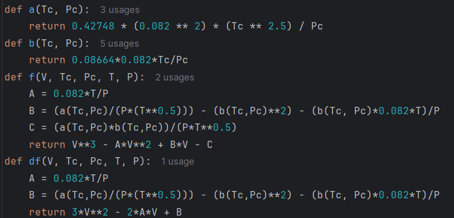
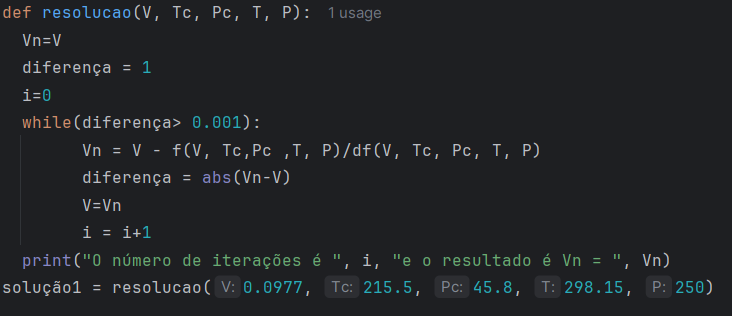

Essa postagem do Química Programada se propõe a resolver o exemplo 5.1 do material online (livro) "Termodinâmica Química". Seu enunciado é o seguinte : "O gás natural é composto principalmente de metano e é utilizado na produção de energia térmica e como combustível veicular. Os gasodutos que transportam o metano para os postos de gasolina operam a 25oC e 250 atm. Calcule a densidade do metano nesta condição. Nos cálculos de volume molar do metano admita que o metano se comporte como: 1. Gás ideal; 2. Gás real (use a equação de Redlich-Kwong)
Para a resolução da equação de Redlich-Kwong, será necessária escrevê-la na forma cúbica e determinar um algoritmo para resolvê-la, determinando o volume ocupado pelo gás. Como dados para resolução do problema, temos a Tc=215,5 K e Pc=45,8.
Já fizemos uma postagem na qual resolvemos a equação cúbica na forma do fator de compressibilidade, para um caso específico (T,P, Tc,Pc fixas), na postagem Determinação do Volume Molar do CO2 usando Métodos Numéricos em Python. Agora, vamos resolver a equação de estado na forma do volume, fazendo um algoritmo que possa ser reaproveitado, bastanto inserir Tc, Pc, T, P e o chute do volume para resolver o método numérito.
A equação de Redlich-Kwong é apresentada na Figura 1. No caso de um problema onde as variáveis conhecidas são a Tempreatura e a Pressão, será necessário isolar a variável V e resolvê-la. Para tanto, a equação de estado deverá ser escrita na sua forma cúbica e deve ser escolhido um método numérico para solução. As manipulações algébricas para escrever a equação na forma cúbica são apresentadas na Figura 2.

O método escolhido para resolução do problema é o Newton-Raphson. Na Figura 3, são apresentadas as funções para calcular as constantes a e b da equação de Redlich-Kwong. Também são apresentadas a função e a derivada da mesma para resolução do método numérico Newton-Raphson. Nessa função, podemos entrar com os valores de Pc em atm e Tc em K. Para as funções f(V, Tc, Pc, T, P) e df(V, Tc, Pc, T, P), podemos entrar com o chute inicial V (pode ser o volume do gás ideal em litros), os valores da constantes críticas e os valores de T e P para o qual queremos calcular o volume V.

O trecho do algoritmo que calcula o volume pelo métdo Newton-Raphson é apresentado na Figura 4 . Foi criada uma função chamada resolucao, onde entramos com o valor do chute inicial, as constantes Tc e Pc e as variáveis T e P. O função pode ser usada para resolução do problema para outro gás (outra Pc e Tc) e ou de outro valor de variáveis T e P. O chute escolhido para inciar o algoritmo de Newton-Raphson é o volume para um gás ideal, de 0,0977 l/mol. Para os valores de P=250 atm e T=298,15, o volume obtido foi 0.080351355. No livro online em questão, o valor do volume obtido foi de 0,0802. Dessa forma, pode-se concluir que o algoritmo elaborado pode ser usado para obtenção de volume do gás real.

Desenvolvimento : Química Programada